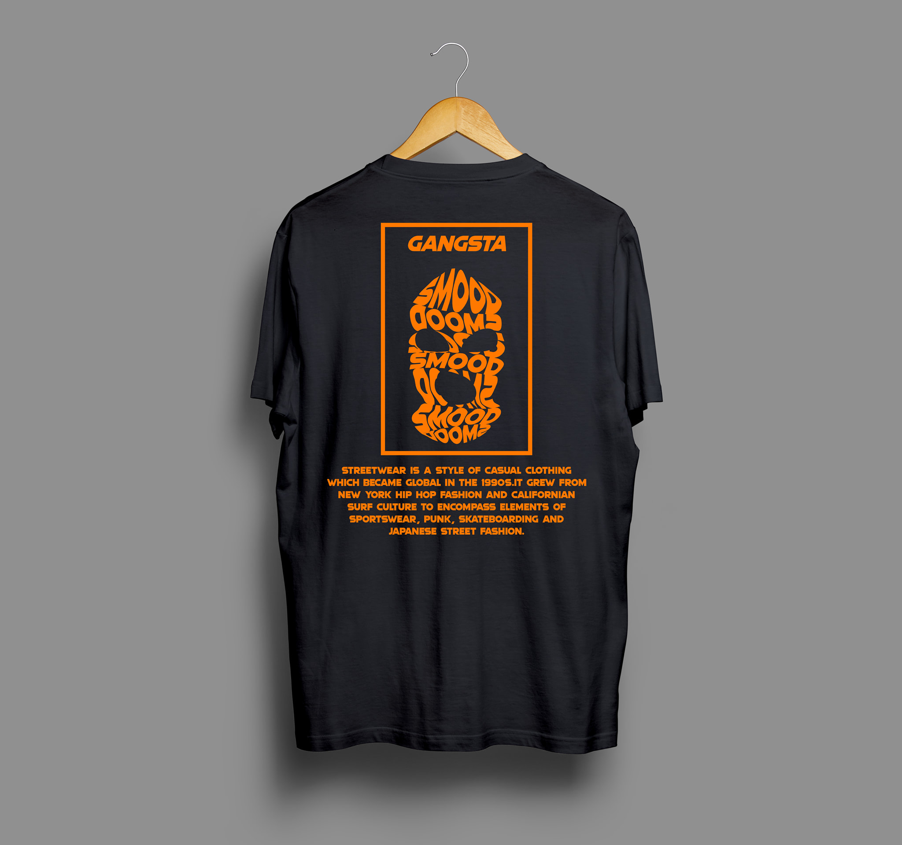
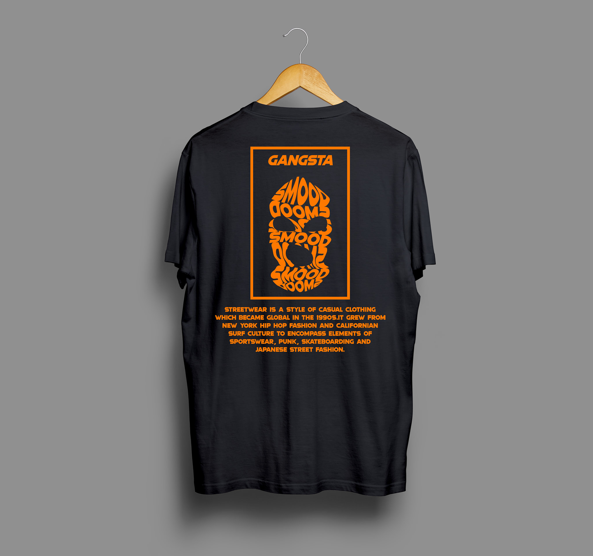
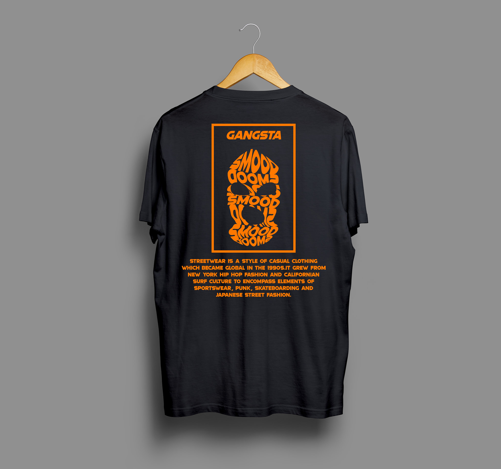

Streetwear is a style of casual clothing which became global in the 1990s. It grew from New York hip hop fashion and Californian surf culture to encompass elements of sportswear, punk, skateboarding and Japanese street fashion. Eventually haute couture became an influence. It commonly centers on "casual, comfortable pieces such as jeans, T-shirts, baseball caps, and sneakers", and exclusivity through intentional product scarcity. Enthusiasts follow particular brands and try to obtain limited edition releases.
